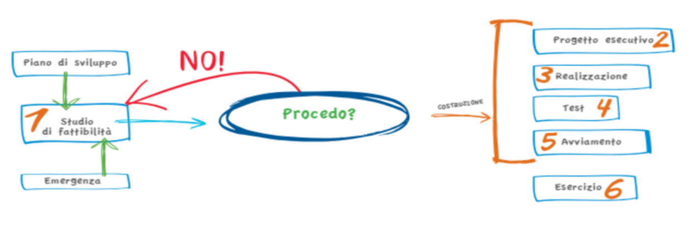

Un’organizzazione è caratterizzata da un gruppo di individui che svolgono attività interdipendenti per il raggiungimento di obiettivi e che sviluppano e mantengono modelli di comportamento relativamente stabili e prevedibili.
Gli elementi chiave per organizzare il lavoro all’interno di un’azienda sono i seguenti:
Organizzando il lavoro si stabilisce chi fa che cosa, quindi si suddividono le attività.
Il coordinamento, nelle teorie organizzative, è stato studiato da Mintzberg nel 1983, il quale prevede cinque meccanismi di coordinamento suddivise in due tipologie:
Per quanto riguarda i dipendenti di un’azienda, ogni individuo ricopre una posizione individuale. Al concetto di posizione individuale agganciamo quello della mansione, cioè, un insieme di compiti che viene attribuita ad una posizione.
Fondamentale per ogni luogo di lavoro è l’organigramma, il quale è una rappresentazione grafica della struttura aziendale, che evidenzia ruoli, legami funzionali e gerarchici, la divisione dei compiti e le responsabilità delle persone che lavorano in azienda in un preciso momento storico.
Un’organizzazione aziendale può essere analizzata da un punto di vista statico, identificandone la struttura, oppure può essere considerata secondo un’ottica dinamica seguendo il flusso delle attività che caratterizzano l’operatività aziendale.
Tutto l’insieme organizzato di attività e di decisioni, finalizzato alla creazione di un output effettivamente richiesto da un cliente, va sotto il nome di “processo aziendale”.
Di questi processi, possiamo identificare due categorie:
Fondamentali, tra questi processi, sono quelli di gestione del mercato, che sono incentrati sulle attività di marketing.
Il termine “marketing”, nello specifico, indica l’insieme di decisioni e azioni che un’impresa intraprende per:
Inoltre, esistono due tipologie di marketing:
Altro compito del marketing, inoltre, è la gestione del ciclo di vita di un prodotto. Il ciclo di vita, infatti, si distingue in quattro diverse fasi:
Ogni attività all’interno di un’azienda deve essere:
Il tutto prende il nome di processo di direzione aziendale, il quale comporta l’attivazione di procedure decisionali, operative e di controllo.
Grazie al processo di direzione aziendale, è possibile governare il “sistema impresa”, che pur essendo unitario, è composto da parti interdipendenti e correlate, rappresentate da:
Una risorsa, sia materiale che immateriale, è tutto ciò con cui l’azienda opera per perseguire i propri obiettivi. Esse possono essere distinte in:
Di seguito, è riportato il ciclo di vita della risorsa, schematizzato nelle seguenti fasi:
Con “processo” si intende l’insieme di attività tra loro correlate che l’organizzazione svolge per gestire il ciclo di vita di una o un gruppo di risorse. Come le risorse, anche i processi sono soggetti al ciclo di vita.
Il sistema informativo, componente fondamentale di ogni organizzazione, è l’insieme dei processi che gestiscono la risorsa informazione.
Oltre al supporto delle attività decisionali, al coordinamento e al controllo, i sistemi informativi possono aiutare i manager e i dipendenti ad analizzare i problemi, a visualizzare argomenti complessi e a creare nuovi prodotti.
Con il termine sistema si evidenzia il fatto che esiste un insieme organizzato di elementi di natura diversa, che interagiscono in modo coordinato. Con l’aggettivo informativo si precisa che tutto ciò è finalizzato alla gestione delle informazioni e quindi le interazioni che si vogliono evidenziare sono quelle dovute a scambi di informazioni.
All’interno del sistema informativo aziendale l’informazione viene “sottoposta” a molti processi di trasformazione ed è possibile individuare, nel suo ciclo di vita, le seguenti cinque principali attività di cui viene fatta oggetto:
L’informazione, intesa come un elemento di contenuto trasferito in un contesto organizzato, riveste un ruolo chiave all’interno dell’organizzazione aziendale e, come abbiamo visto, è il risultato di una elaborazione: questa elaborazione avviene mediante l’informatica e le telecomunicazioni, nelle sue componenti hardware e software che, a differenza di altre tecnologie, supportano il ciclo di vita di questa risorsa aziendale. Il legame che intercorre tra l’informatica, le telecomunicazioni, l’informazione e l’organizzazione si evidenzia in qualsiasi attività aziendale.
Le operazioni svolte da un sistema informativo possono essere classificate in base alle esigenze che scaturiscono dalle attività dei diversi attori dell’organizzazione aziendale, secondo uno schema chiamato piramide di Anthony, che individua e classifica tre tipologie di attività aziendali:
Gli scambi di informazioni che avvengono all’interno della piramide di Anthony possono essere classificati a seconda della “direzione” che li contraddistingue, i quali sono:
Una decisione consiste in un atto conscio e irrevocabile di allocazione di risorse, finalizzato al raggiungimento di determinati obiettivi aziendali. Se l’informazione è incompleta, siamo in presenza di un’incertezza, cioè, una mancanza di informazioni. Per ridurre i margini di quest’ultima, possiamo introdurre meccanismi che ci consentano di diminuire la necessità di informazione o migliorare il sistema di trattamento delle informazioni.
Il sistema informativo automatizzato, o sistema informatico, è quella parte del sistema informativo realizzata con tecnologie informatiche, quindi la porzione informatizzata del sistema informativo, cioè l’insieme delle applicazioni software e degli strumenti hardware che gestiscono i dati e i flussi informativi.
Il ciclo di vita di un sistema informativo aziendale è rappresentato dal piano di sviluppo dello stesso, suddiviso in diverse fasi:
